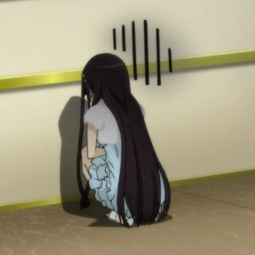

Minnu She/Her
Birthday: December (I think), 2024
Left: February 2025
About Her:
Chaotic, Moody. A total drama queen. Got angry over the tiniest things and somehow always gave off strong elder sibling energy... just like me hehe, A meat lover, Chicken was her absolute favorite, and she refused to eat market wet or dry food no matter what.
My POV:
When she was around 8 months old, she disappeared. Maybe she ran
away, maybe she found another home. I honestly don't know. I still
don't know where she went or if she's even alive. That uncertainty
has never really left me. I'm sorry, Minnu. I don't remember every
little thing about you anymore, and that makes me sad. But I do
remember that you were part of my life, and that you were loved.
Really, really loved.
I hope that wherever you are, you're safe, happy, well-fed, and
taking lots of cozy naps.
Thank you for being my little chaos.

Wherever you are, I'll always love you.
- Your beloved hooman